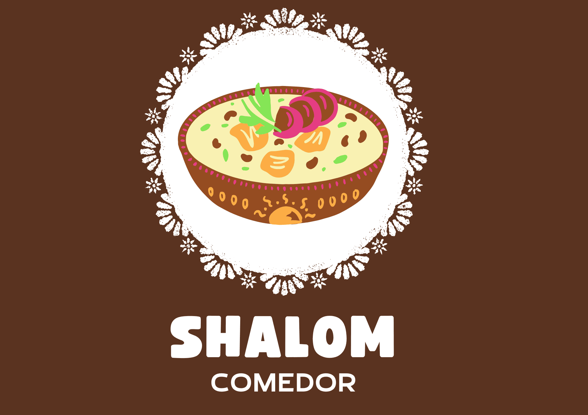
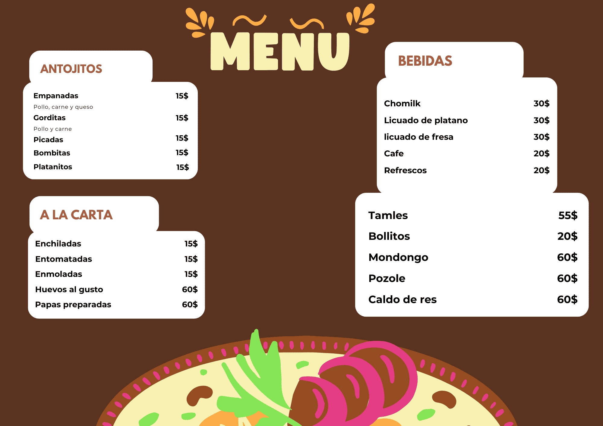
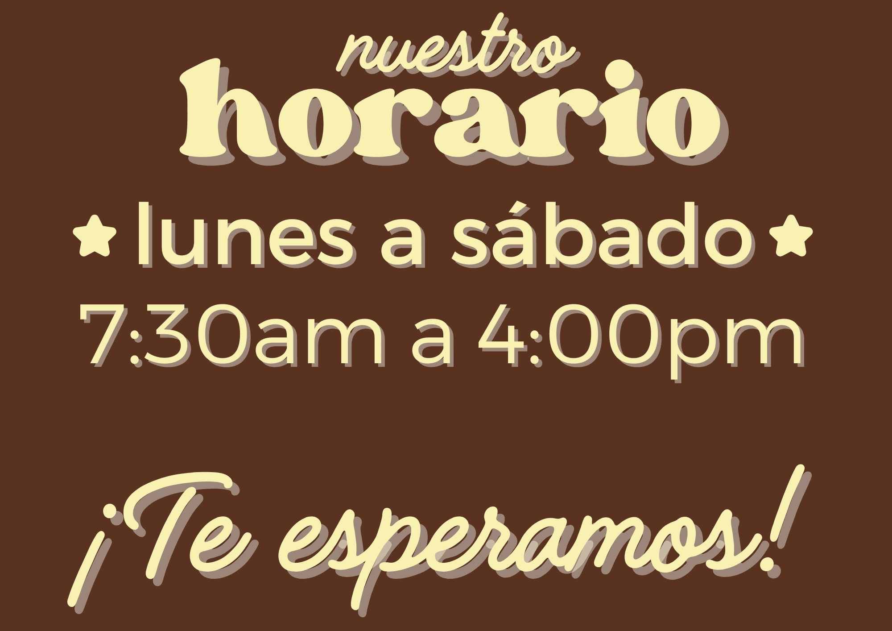
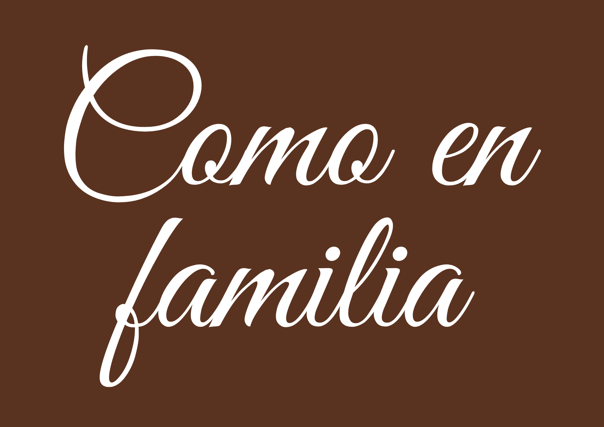

Desde que llegas, el ambiente te hace sentir como en casa. El aroma de la comida recién hecha, el trato amable y ese sabor auténtico que solo se encuentra en la cocina tradicional… todo se combina para darte una experiencia que va más allá de solo comer. Aquí cada platillo tiene ese toque especial que recuerda a la comida de hogar, preparada con dedicación y con ingredientes frescos. Ya sea que vengas con familia, amigos o incluso solo, siempre encontrarás un espacio cómodo y una sonrisa que te recibe. Más que una fondita, Shalom es un lugar donde se comparten momentos, donde cada comida se disfruta y donde seguro querrás regresar. Date la oportunidad de probarlo… porque hay sabores que simplemente no se olvidan.


Lo que realmente hace especial a Fondita Shalom no es solo la calidad de sus platillos, sino la sensación que deja en cada visita. Es ese tipo de lugar donde el tiempo pasa sin prisa, donde puedes sentarte con tranquilidad y disfrutar sin sentirte apresurado. Aquí, los detalles marcan la diferencia: la atención constante, el ambiente limpio y agradable, y ese equilibrio entre sencillez y buen gusto que genera confianza. Es un espacio que invita a quedarse un poco más, a disfrutar la conversación y a regresar sin pensarlo demasiado. Más que un lugar al que vienes a comer, es un sitio al que naturalmente quieres volver.

Ven y disfruta de una experiencia única en Fondita Shalom Te esperamos en Corregidora de Querétaro 27, Nuevo Tres Valles, 95300, en Tres Valles. Un lugar donde el sabor, la atención y el ambiente se combinan para hacerte sentir

El respeto se refleja en la forma en que se atiende a cada cliente, brindando siempre un trato amable, digno y cercano. La responsabilidad está presente en la preparación de los alimentos, cuidando la calidad, la higiene y el sabor en cada detalle. El compromiso impulsa a ofrecer siempre lo mejor, buscando la satisfacción de quienes visitan el lugar. A esto se suma la honestidad, manteniendo precios justos y un servicio transparente. El cariño, ya que cada platillo se prepara como si fuera para la familia, creando una experiencia cálida y auténtica.
Parafraceado por IA